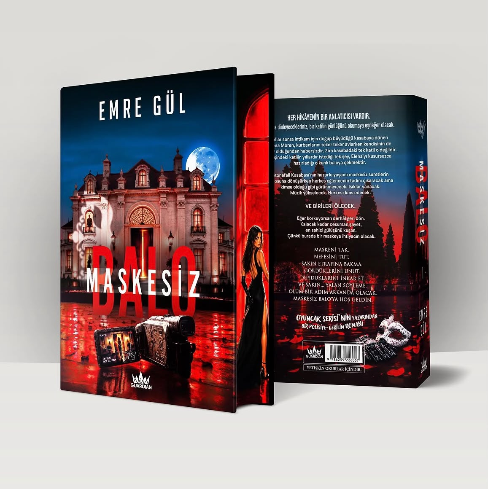

HER HİKÂYENİN BİR ANLATICISI VARDIR.
Bu kez dinleyecekleriniz, bir katilin günlüğünü okumaya eş değer olacak.
Yıllar sonra intikam için doğup büyüdüğü kasabaya dönen Elena Moren, kurbanlarını teker teker avlarken kendisinin de bir av olduğundan habersizdir. Zira kasabadaki tek katil o değildir. Peşindeki katilin yıllardır istediği tek şey, Elena`yı kusursuzca hazırladığı o kanlı baloya çekmektir.
Stonefall Kasabası’nın huzurlu yaşamı maskesiz suretlerin balosuna dönüşürken herkes eğlencenin tadını çıkaracak ama kimse olduğu gibi görünmeyecek. Işıklar yanacak. Müzik yükselecek. Herkes dans edecek. VE BİRİLERİ ÖLECEK.
Eğer korkuyorsan derhâl geri dön. Kalacak kadar cesursan şayet, en sahici gülüşünü kuşan. Çünkü burada bir maskeye ihtiyacın olacak.
MASKENİ TAK.
NEFESİNİ TUT.
SAKIN ETRAFINA BAKMA.
GÖRDÜKLERİNİ UNUT.
DUYDUKLARINI İNKÂR ET.
VE SAKIN... YALAN SÖYLEME.
ÖLUM BİR ADIM ARKANDA OLACAK.
MASKESİZ BALO`YA HOŞ GELDİN.